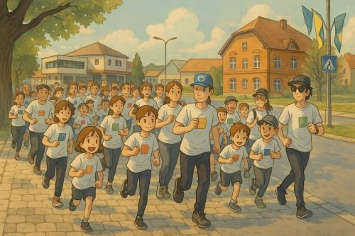
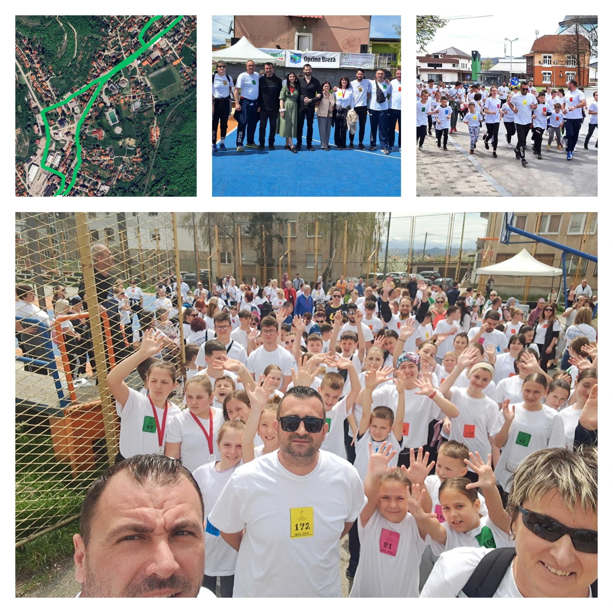

“4. revijalna utrka “Novo Kojić 2025.””
📅14.april, 2025

U organizaciji Udruženja pedagoga tjelesnog odgoja i sporta 13.aprila održana je 4. revijalna utrka “Novo Kojić 2025.”. Utrka je organizovana u povudu 6. aprila-Dana općine Breza a posvećena je prvoj civilnoj žrtvi odbrambeno-oslobodilačkog rata u Bosni i Hercegovini, prosvjetnom radniku koji se zalagao za mir. Učešće u ovogodišnjoj utrci uzelo je oko 200 učesnika koji su trčali i šetali ulicama Breze.
U ime porodice Kojić, učesnicima je zahvalio Tigran Kojić, sin pokojnog nastavnika. “Hvala svima koji učestvuju, hvala organizatorima, sponzorima i volonterima, a posebne izraze zahvalnosti upućujem Fahrudinu Hodžiću, čovjeku koji je inicirao održavanje prve utrke u 2019. godini. Događaj postaje sve masovniji i nadam se da će tradicija biti nastavljena. Pozdravio bih i goste iz susjednih općina koji su dolaskom dali dodatni doprinos čuvanju sjećanja“, naglasio je Tigran Kojić.
Posebna zahvalnost ide svima koji su pomogli organizaciju ove utrke, Općini Breza i općinskom načeniku, Policijskoj stanici Breza, Firmi “Enemon” d.o.o. Breza, medijskim pokroviteljima Radio Breza i portal BrezaX, kao i volonterima.
